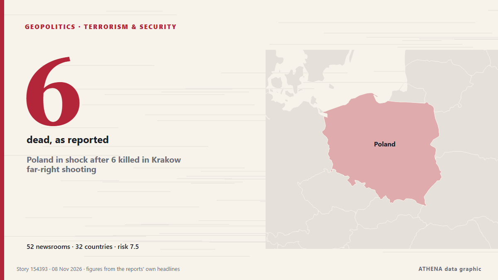

ATHENA Glaux Intelligence — Global news intelligence — every number explained
Every headline, checked across countries.
ATHENA Glaux reads 633 news outlets worldwide. A story becomes a verified event only when independent outlets report it. Each event shows who was first and a risk score with its reasons.
Reports drift in from independent outlets - when two meet on the same story, it becomes a verified event.
Three ways to read today
Start with the one that fits your timeVerified events
Ranked by how widely they are reported
- Eisenkot open to Netanyahu joining Israel’s next government156 outlets · 55 countriesRisk 5.2
- After JD Vance, now Trump Jr blames Iran war for US midterms defeat83 outlets · 39 countriesRisk 7.1
- US strikes Iran’s Qeshm island – Report66 outlets · 33 countriesRisk 6.0
- Paraguay’s President Santiago Peña impeached and arrested50 outlets · 32 countriesRisk 7.4
- Trump offers UFC boss Dana White job of White House press secretary59 outlets · 29 countriesRisk 0.0
Analysis Desk
Ask a question and read a reasoned assessment of a leading story, with what would prove it wrong.
Open the Analysis Desk ›How ATHENA checks a story
- CollectReports arrive from independent outlets in many countries.
- MatchWhen two outlets meet on the same story, it becomes a verified event.
- ExplainEach event shows who was first, how far it spread and why the risk is what it is.

GeopoliticsPoland in shock after 6 killed in Krakow far-right shooting
5 of 16 injured individuals foreign nationals from Austria, Germany, Portugal, Russia, UK. from Anadolu Agency (English)
After JD Vance, now Trump Jr blames Iran war for US midterms defeat
Says war in Iran had weighed on Republican candidates, even as voters backed his handling of it. from Express Tribune
Europe will be represented at US-mediated Ukraine talks in Abu Dhabi: France
France has announced that Europe will be represented at US-mediated talks in Abu Dhabi with Russia and Ukraine. from Arab News

With Stephen Miller at the helm, Trump charts a course for confrontation
The architect of the Trump administration’s brutal crackdowns on immigration and dissent was already known as “the prime minister.” Now he’ll work as the chief of staff. from Wired
Eisenkot open to Netanyahu joining Israel’s next government
Former deputy governor tells Central Banking prime minister’s proposals are ‘stupid’ and ‘crazy’ from Central Banking
Riyadh financial district targeted, Aramco tower damaged
RIYADH: Multiple witnesses told AFP on Sunday that Riyadh’s financial district had been targeted and the area’s Aramco tower damaged, after the Saudi-led coalition fighting Yemen’s Houthis said it… from New Straits Times
Geopolitics, Politics & Security
More ›Trump says return to war with Iran ‘highly unlikely’ if negotiations produce progress
“It depends on whether or not they sign a very strong agreement,” Trump told CNN. from The Jerusalem Post
- Elections & politics
Israeli President Herzog tasks Gadi Eisenkot with forming new government
- Diplomacy & summits
Iran's Araghchi says he held talks with 12 foreign ministers to defuse tensions
- Wars & conflicts
US launches task force to disrupt land transit routes into Iran
- Elections & politics
Pete Hegseth faces bipartisan impeachment push after Republican losses in US midterm elections
Economics, Finance & Markets
More ›Brazil Interest Rate Cuts Stall on US Yields
Brazil's central bank has cut five times this year, but higher US rates and 4.58% inflation shrink its room. from The Rio Times
- Stocks, bonds & markets
Potentially historic drop for Alphabet's stock drags US market lower
- Inflation & interest rates
Fed policymakers consider rate hike after strong jobs report
- Shares & market moves
10 killed as car plunges into lake in Brazil
- Debt & budgets
Pope Leo heads to Milei’s Argentina as tensions loom over austerity, Iran
Trade, Industry & Infrastructure
More ›Met Office 17 hour 'flight cancellation' warning issued for Merseyside
Disruption is expected to travel across road, rail and flights. from Liverpool Echo
- Shipping & ports
3rd oil tanker catches fire on Hormuz Strait: IRGC Navy
- Aviation, rail & road
GCC states sign landmark agreement to advance Gulf railway project
- Aviation, rail & road
Peru airport thwarts plot to smuggle 3,000 tarantulas in dirty socks
- Shipping & ports
Two oil tankers catch fire after attempting to cross Strait of Hormuz
Energy, Resources & Environment
More ›Heavy rain floods displaced families’ tents in Gaza – in pictures
The first winter storm began affecting the people of Gaza this weekend with heavy rain hitting on Saturday. from Guardian Environment
- Extreme weather & natural disasters
Palestinian FM calls for int'l action amid Gaza tent flooding
- Nuclear energy
Zaporizhzhia nuclear plant relying on generators again after losing external power supply
- Extreme weather & natural disasters
President Barzani Offers Condolences to Families of Two Erbil Flood Victims
- Climate & climate policy
Ecuador’s Role in Latin America Explained
Technology, AI & Cybersecurity
More ›China recruited Singapore-based executive to spy on Nvidia CEO Jensen Huang: US intelligence
Nvidia's lead over Huawei in China's AI accelerator market has narrowed by 80% in a year, bringing CEO Jensen Huang's warnings about losing the country's US$50 billion AI chip market closer to… from DigiTimes Asia
- Artificial intelligence
AI companies scramble to navigate a world hostile to data centres
- Cybersecurity
Hackers Claim Leaked Rosstat Data Shows 450,000 Russian Deaths
- Media & disinformation
Israel's detention of Abou Shhadeh 'a campaign to silence'
- Space & satellites
NASA to send nuclear-powered rover to Moon in 2028
Business, Companies & Investment
More ›Jennifer Welch and Angie Sullivan Apologize for Laughing at “Insensitive Joke” About Charlie Kirk on ‘I’ve Had It’ Podcast
"We regret it, and we apologize. Whatever our political differences, there is nothing funny about gun violence," they wrote in a joint statement on Saturday. from The Hollywood Reporter
- Bankruptcies & restructuring
Verwey-Jonker Institute facing bankruptcy amid AI rise
- Corporate strategy
Big on Savings, Big on Happy with Cebu Pacific’s 11.11 Seat Sale
- Corporate strategy
Spanish companies plan district heating networks powered by data center waste heat
- Investment & capex
Gov't weighs W2tr in urgent firefighting aid amid local funding strain
Today in numbers
| 20:00 | 284 |
|---|---|
| 21:00 | 299 |
| 22:00 | 516 |
| 23:00 | 255 |
| 00:00 | 219 |
| 01:00 | 195 |
| 02:00 | 246 |
| 03:00 | 264 |
| 04:00 | 274 |
| 05:00 | 345 |
| 06:00 | 395 |
| 07:00 | 467 |
| 08:00 | 537 |
| 09:00 | 463 |
| 10:00 | 301 |
| 11:00 | 443 |
| 12:00 | 437 |
| 13:00 | 561 |
| 14:00 | 472 |
| 15:00 | 365 |
| 16:00 | 496 |
| 17:00 | 453 |
| 18:00 | 344 |
| 19:00 | 335 |
Risk of today's events
Most widely covered
- Economy & Markets
Binance finance chief leaves days after $6.3 billion hack
53 countries · 126 outlets - Trade & Industry
Bomb threats disrupt European airports: 25 flights diverted in a single day
46 countries · 93 outlets - Geopolitics
After JD Vance, now Trump Jr blames Iran war for US midterms defeat
39 countries · 83 outlets
Emerging signals
- Sudden surge · Active nowGiza
- Sudden surge · Active nowGulf of Oman
- Sudden surge · Active nowDana White
- Sudden surge · Active nowUFC
- Sudden surge · Active nowKrakow's
Official warnings
- M 6.1 - Fiji regionM6.1 · USGS ·
- Cyber chief: UK facing AI-powered attacks on critical infrastructure within two yearsadvisory · UK National Cyber Security Centre ·
Get ATHENA on Telegram
Join the free ATHENA Glaux group and receive the news the moment it is published here:
- breaking events with a risk of 6 or more
- an hourly round-up of the top events
- risk-tracker updates (Hormuz, Red Sea, Taiwan, sanctions and more)
- the daily briefing every morning at 10:00 (Athens time)
- a weekly outlook
- official warnings, emerging signals and rising risks
Tap the button, Telegram opens, press Join. Posts are in English; you can mute or leave at any time. No Telegram yet? It is free at telegram.org.
Risk trackers
More ›Global risk outlook — week 45, 2026 (2–8 Nov) ›